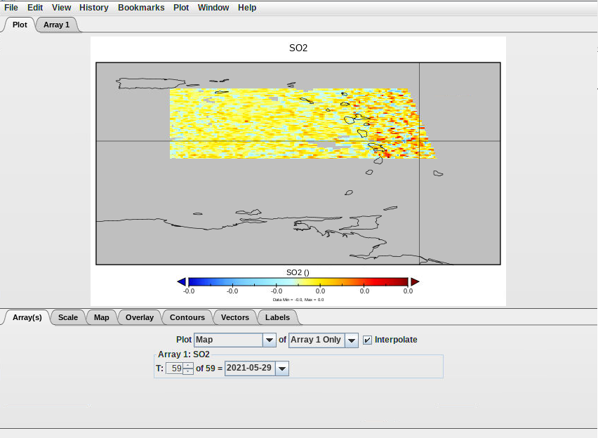
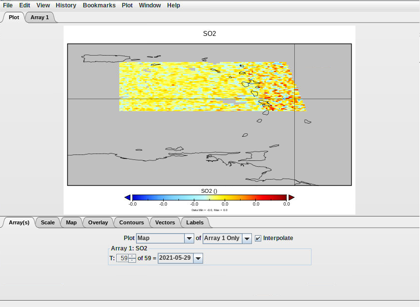

Through this tutorial you will learn here how to access and download Copernicus Data Space Ecosystem (CDSE) data through a jupyterlab Galaxy interactive tool :
This tool enables you to leverage the Copernicus Data Space Ecosystem services and access data effortlessly.
The JupyterLab service allows you to dive into data exploration, visualization, and analysis without the hassle of installing dependencies or downloading large data sets.
Then, you can visualise these data and process them with Panoply (plots geo-referenced and other arrays from netCDF, HDF, GRIB, and other datasets).
The purpose of this tutorial is to propose a user-friendly, interactive and efficient way to explore and jointly analyze remote sensing observations, from both the atmosphere and solid earth communities, for the monitoring of the volcanic activity in case of eruption and the multi-scale impact of volcanic emissions on the atmosphere.
Dataset of Sentinel 5P L2 from the 1st of April to the 30th of may 2021 of the Antilles. Especially of the La Soufriere Saint Vincent (Antilles) where a volcaninc erruption occured 9th of April. This dataset is focused on the dioxide sulfur (SO2) and Aerosol index (AI) spread out. Indeed, the knowledge of volcanic activity at a high temporal resolution is crucial for robustly determining large-scale impacts of volcanoes on atmosphere (air quality, air traffic) and climate. As such, this platform will be also of interest for scientists involved in the field of volcanic impacts at large, including institutions in charge of the monitoring of air quality and aviation safety.
Interactive tools are working differently than classical tools as it allows the user to interact with a dedicated graphical interface. This kind of tools is used to give access to Jupyter notebooks, RStudio or R Shiny apps for example.
You can come back to where you left off the tutorial anytime by clicking level.
Hands-on: Log in to Galaxy
Open your favorite browser (Chrome, Safari or Firefox as your browser, not Internet Explorer!)
You can start running your notebook. To do so you can go go on the pannel displaying button right above the notebook and click on the workflow-run.
Everytime you press this button you can excecute a one by one the cells.
In the Setup section when you execute the connection cell you’ll have some actions to conduct.
First click ont the link appearing, you’re notebook should look like the following :
Once you clicked a new window opens. If you don’t have a copernicus account please create one and follow the instructions given.
If you have an account sign in and then press the green YES
You’ll be redirected to a page letting you know the connection was a success
Now, you can go back on your jupyterlab and execute the rest of the notebook.
Once you executed the entire notebook you should have a new file in the left pannel named sentinel5.nc.
Select the file there and click right, and then copy
Then go back to the root of your path and go in the ouputs folder. There you can click right and paste the file.
This part is now finished you just have to correctly close this notebook. On the top left click on files and then on Shut down.
In the jupyterlab go to :
notebooks
Then, openeo
Open the notebook Sentinel_3.ipynb
You can see it’s relatively similar to the one you just worked on. You can adapt it as you want to retrieve Sentinel data of all kind.
Go back on your Galaxy window. After a couple minutes you should see your outputs turning green in your history.
Hands-on: Clean your data
Firstly, you’ll can change the name of your new items by adding the extension at the end sentinel5_SO2 of your history into sentinel5_SO2.nc (for the 2 others sentinel5_aerosol_354.nc and sentinel5_aerosol_340.nc).
Click on the galaxy-pencilpencil icon for the dataset to edit its attributes
In the central panel, change the Name field
Click the Save button
Check that your data are in netcdf format with galaxy-pencil, it should be netcdf
Click on the galaxy-pencilpencil icon for the dataset to edit its attributes
In the central panel, click galaxy-chart-select-dataDatatypes tab on the top
In the galaxy-chart-select-dataAssign Datatype, select nectdf from “New type” dropdown
Tip: you can start typing the datatype into the field to filter the dropdown menu
Click the Save button
Visualise Sentinel 5
Global view
Hands-on: Visualise Sentinel 5 data with Panoply
Panoply with the following parameters:
“netcdf”: select sentinel5_SO2.nc, sentinel5_aerosol_340.nc and sentinel5_aerosol_354.nc
Run Tool
Access Panoply
Go to User > Active InteractiveTools
Wait for the Panoply to be running (Job Info)
Click on Panoply
If at one point your Panoply interface becomes blank, do NOT panic ;) you just need to reload your tab (circular arrow top left)
Once in the Panoply interface :
In the pop-up window go select the 3 netcf files sentinel5_SO2.nc, sentinel5_aerosol_340.nc and sentinel5_aerosol_354.nc and then Open.
In the bottom of this window you have the possibilty to select what you want to Show go there and select “Georeferenced variables”
Select one of the 3 possible data and then on the top left press Create Plot
In the pop-up window stay on the default choice “Create georeferenced Longitude-Latitude plot” and press Create
You will obtain a world map like the folowing
You should see a colored spot in the Atlantic.
On your keyboard press ctrl (or cmd on Mac) and select a rectangle around the colored spot to zoom in.
In the “Overlay” tab in “Overlay 1:” select MWDB_Coasts_Countries_1.cnob, in order to see the islands delimitation on your map.
Save your plot. Go on the top left to “File” then “Save Image As …” go in the output folder and save.
You can do the same plot for each data subset.
In the top of your graph there is a tab Window click on it there you should see the other graph made.
An example here with the SO2 graph selected but you could switch to the AER_AI ones by checking one of their box.
Hands-on: Visualise data through out time
Georeferenced plot through time
On you graph window in the “Array(s)” you can select the day you want too see.
Some examples with changing the date :

Create an animation through time
From one of your previous plot window (the S02 one for instance), click on File and select Export Animation. Save your plot in “outputs” using either MOV or AVI format. It goes through each plot e.g. for each month and create an animation where you can see the evolution of SO2 variable from the 1st of April to the 30th of May 2021. You will be able to download the resulting movie from Galaxy once you quit Panoply.
Create a timeserie plot
In the first tabular select the “SO2” variable and click on Create Plot
There you need to check the box “Create horizontal line plot along t axis” and create
Here, you should see timeserie as for the georeferenced plot you can swith from one day to another and also extract it as an animation through time.
Hands-on: Quit Panoply correctly
Go on the top left in File
Select Quit Panoply
Go back to your current Galaxy history and you should find Panoply outputs
On the top of the galaxy page click on the galaxy-scratchbook to activate the multi view.
Then in the panoply outputs click on the galaxy-eye of each of the png images.
You should be able to rearrange the windows to see each outputs
For the animated file go on galaxy-save
Then, in your downloads you should have a small video that you can visualise on your computer.
Conclusion
Now you have finished this tutorial. You leearned how to use a jupyterlab tool with OpenEO technologies to download data and how to visualise them with Panoply.
You've Finished the Tutorial
Please also consider filling out the Feedback Form as well!
Did you use this material as an instructor? Feel free to give us feedback on how it went.
Did you use this material as a learner or student? Click the form below to leave feedback.
Hiltemann, Saskia, Rasche, Helena et al., 2023 Galaxy Training: A Powerful Framework for Teaching! PLOS Computational Biology 10.1371/journal.pcbi.1010752
Batut et al., 2018 Community-Driven Data Analysis Training for Biology Cell Systems 10.1016/j.cels.2018.05.012
@misc{climate-sentinel5_data,
author = "Marie Josse",
title = "Sentinel 5P data visualisation (Galaxy Training Materials)",
year = "",
month = "",
day = ""
url = "\url{https://training.galaxyproject.org/training-material/topics/climate/tutorials/sentinel5_data/tutorial.html}",
note = "[Online; accessed TODAY]"
}
@article{Hiltemann_2023,
doi = {10.1371/journal.pcbi.1010752},
url = {https://doi.org/10.1371%2Fjournal.pcbi.1010752},
year = 2023,
month = {jan},
publisher = {Public Library of Science ({PLoS})},
volume = {19},
number = {1},
pages = {e1010752},
author = {Saskia Hiltemann and Helena Rasche and Simon Gladman and Hans-Rudolf Hotz and Delphine Larivi{\`{e}}re and Daniel Blankenberg and Pratik D. Jagtap and Thomas Wollmann and Anthony Bretaudeau and Nadia Gou{\'{e}} and Timothy J. Griffin and Coline Royaux and Yvan Le Bras and Subina Mehta and Anna Syme and Frederik Coppens and Bert Droesbeke and Nicola Soranzo and Wendi Bacon and Fotis Psomopoulos and Crist{\'{o}}bal Gallardo-Alba and John Davis and Melanie Christine Föll and Matthias Fahrner and Maria A. Doyle and Beatriz Serrano-Solano and Anne Claire Fouilloux and Peter van Heusden and Wolfgang Maier and Dave Clements and Florian Heyl and Björn Grüning and B{\'{e}}r{\'{e}}nice Batut and},
editor = {Francis Ouellette},
title = {Galaxy Training: A powerful framework for teaching!},
journal = {PLoS Comput Biol} Computational Biology}
}
Funding
These individuals or organisations provided funding support for the development of this resource
Questions:
Open image in new tab


Some examples with changing the date : 


{kind=link}
{kind=link}
{kind=link}
{kind=link}
{kind=link}
{kind=link}
{kind=link}
{kind=link}